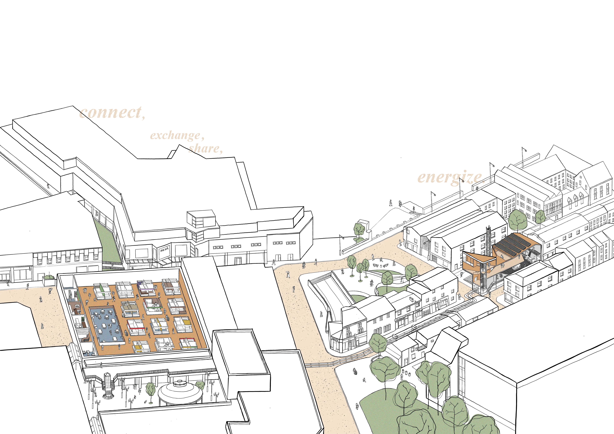

THIRD YEAR ARCHITECTURE PROJECT
ENERGY CENTRE FOR THE BURNLEY MARKET


ENERGY CENTRE FOR THE BURNLEY MARKET
The project of a biomass CHP power plant to provide with energy and heat for the Burnley Market aimed to resurrect the space that is a social hub and a main retail area for the residents of the city. By collecting and using biomass produced at the market a local energy cycle between the two buildings is created. Visitors’ centre at the plant provides with information and education about clean energy production and offers a warm, energy-efficient space for social gatherings.